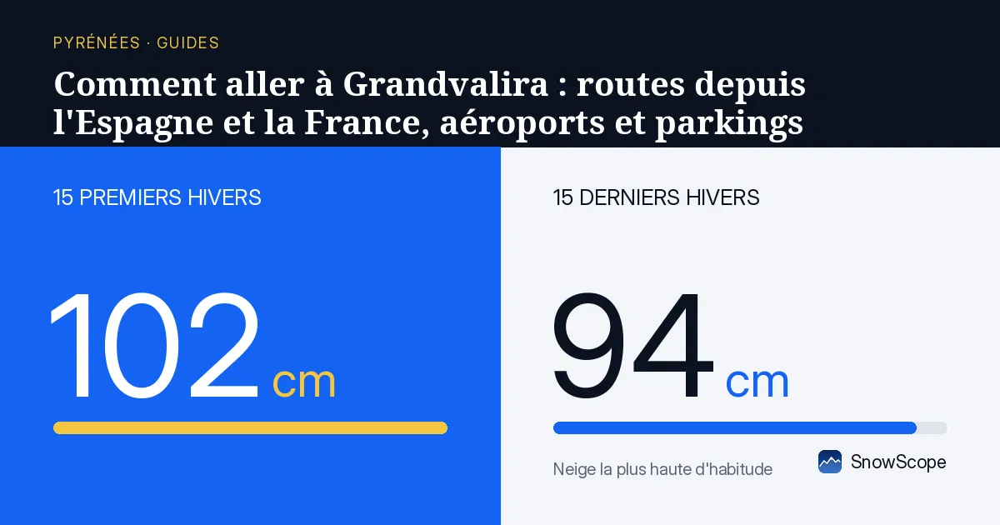
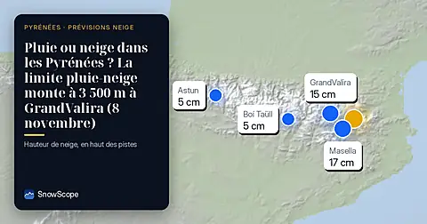

Comment aller à Grandvalira : routes depuis l'Espagne et la France, aéroports et parkings
Grandvalira s'étend sur deux paroisses andorranes le long d'une seule route de vallée, avec des points d'accès du sud espagnol et du nord français au Pas de la Casa. Comme l'Andorre n'a ni aéroport ni train, chaque skieur se rend en voiture ou en bus depuis la France ou l'Espagne.
Consultez les prévisions neige en temps réel pour GrandValira sur l'application SnowScopeHauteurs de neige, alertes poudreuse et carte 3D, gratuitement.

Arriver d'Espagne
L'approche depuis l'Espagne utilise l'autoroute C-16 depuis Puigcerdà ou la C-145 depuis Lleida, qui se rejoignent à La Seu d'Urgell environ 30 km au sud de la station. De là, la route CG2 grimpe vers le nord dans la principale vallée de ski d'Andorre. L'itinéraire est ouvert toute l'année mais grimpe au-dessus de 2 000 m, donc les pneus d'hiver et les chaînes sont essentiels.
Une fois dans la vallée, vous avez cinq zones d'accès : Encamp en bas, puis Canillo, El Tarter, Soldeu, et enfin Grau Roig et Pas de la Casa près de la crête avec la France. Chacun a ses propres parkings et accès aux remontées, donc vous pouvez choisir où vous garer en fonction du secteur que vous prévoyez de skier.
Traverser depuis la France
Depuis la France, la N-22 atteint le Pas de la Casa à la frontière même, le point d'accès le plus élevé de Grandvalira. Au-delà, deux itinéraires descendent dans la vallée : la route ouverte au-dessus du Port d'Envalira à 2 408 m, ou un tunnel à péage de 3 km ouvert en 2002, circulant à environ 2 000 m et gagnant du temps par mauvais temps.
La sortie du tunnel se trouve près de Grau Roig, le secteur de ski le plus élevé. Si vous empruntez la route ouverte, prévoyez du temps supplémentaire et vérifiez d'abord les conditions, car le vent et la neige peuvent affecter la visibilité et l'adhérence sur le col élevé.

Aéroports et liaisons en bus
L'aéroport d'Andorre lui-même à La Seu d'Urgell, à 27 km, a des vols limités. La plupart des skieurs vont dans des hub plus importants : Toulouse-Blagnac (176 km), Carcassonne (176 km), Barcelone-El Prat (200 km), ou Girona-Costa Brava (260 km). De n'importe lequel de ces aéroports, vous pouvez louer une voiture ou prendre un car pour l'Andorre.
Grandvalira exploite un bus gratuit pour les skieurs en Andorre, donc une fois que vous arrivez dans le pays, se déplacer entre les bases de remontées ou les parkings ne coûte rien si vous avez un forfait de station. Les temps de trajet depuis les principaux aéroports en voiture sont de trois à cinq heures selon le trafic et la frontière que vous choisissez.
Où se garer
Grandvalira publie les places libres en temps réel dans ses parkings plus importants. Le secteur El Tarter d'Encamp offre 850 places extérieures gratuites, tandis que le parking couvert payant se trouve à Soldeu, Canillo et la Funicamp à Encamp. Les fins de semaine et vacances scolaires, les lots gratuits se remplissent tôt, donc consultez la page de parking de la station avant de partir ou arrivez avant 09:00.
La route de vallée (CG2) traverse chaque secteur, donc vous n'avez pas besoin de conduire sur toute la longueur pour atteindre les zones supérieures. Garez-vous au point d'accès de votre choix, montez en remontée, et explorez tout le domaine de là.
Essentiels pour la conduite hivernale
Tous les itinéraires vers l'Andorre grimpent au-dessus de 2 000 m en hiver. La neige s'accumule régulièrement : à mi-montagne à Grandvalira (2 146 m), elle couvre le terrain environ 168 jours en une saison typique, avec le couvert le plus profond généralement en février. Transportez des pneus d'hiver, des chaînes et un grattoir, et consultez les conditions routières avant de partir.
L'Agence de mobilité d'Andorre (www.mobilitat.ad) publie les mises à jour en direct sur la CG2 et la route d'Envalira. Par tempête, le tunnel depuis la France est souvent plus sûr que le col élevé. Prévoyez du temps supplémentaire si la neige tombe ou si le vent souffle fort.
À quoi s'attendre à l'altitude de la vallée
Le fond de la vallée à Encamp se situe à 1 674 m, donc le couvert de neige en début de saison est mince et les zones rocheuses peuvent apparaître. Les remontées à mi-montagne grimpent à 2 146 m, où la neige de pointe typique de 102 cm arrive, et la zone de sommet monte à 2 619 m avec un pic habituel de 161 cm. Cette différence de hauteur signifie une meilleure fiabilité de la neige plus haut.
En novembre et avril, la neige au niveau de base est rare ; décembre à mars est quand la vallée a le plus de neige. Planifiez votre voyage de janvier à mars si la profondeur de neige est votre principale préoccupation.
Conseils aux skieurs
- Réservez une voiture de location à l'avance si vous prenez l'avion ; les horaires des bus sont fréquents mais moins flexibles qu'un véhicule privé.
- Transportez l'équipement d'hiver obligatoire : la CG2 et la route d'Envalira franchissent toutes deux 2 000 m et peuvent fermer par forte neige.
- Les fins de semaine chargées, utilisez le bus gratuit de la station entre les secteurs au lieu de bouger votre voiture.
- Consultez le site de l'Agence de mobilité d'Andorre le matin de votre voyage ; par tempête, le tunnel depuis la France est souvent plus sûr que le col ouvert.
- Avant de quitter les pistes partout en Andorre, lisez le bulletin officiel d'avalanche du Service météorologique national d'Andorre.
À propos de ces chiffres
Les hauteurs de neige des stations sont la neige la plus épaisse sur le haut du domaine à la date indiquée ; ce sont des estimations pour une zone, pas une mesure en un point. Les prévisions peuvent changer. Consultez toujours le bulletin d'avalanche officiel avant le hors-piste.
Bulletins d'avalanche officiels: Servei Meteorològic Nacional d'Andorra – Estat de la neu
Citer ce bulletin
Pour la recherche, l'enseignement ou la presse : chiffres et graphiques réutilisables librement sous CC BY 4.0 avec cette citation.
SnowScope (2026), Comment aller à Grandvalira : routes depuis l'Espagne et la France, aéroports et parkings, https://snowscope.app/blog/fr/2026/11/how-to-get-to-grandvalira-andorra-roads-airports-parking.html, consulté le 2026-11-09
SnowScope (Atlas Labs). (2026, November 9). Comment aller à Grandvalira : routes depuis l'Espagne et la France, aéroports et parkings. SnowScope snow reports. https://snowscope.app/blog/fr/2026/11/how-to-get-to-grandvalira-andorra-roads-airports-parking.html
BibTeX
@misc{snowscope2026howtogettograndvaliraand,
author = {{SnowScope (Atlas Labs)}},
title = {Comment aller à Grandvalira : routes depuis l'Espagne et la France, aéroports et parkings},
year = {2026},
month = nov,
howpublished = {\url{https://snowscope.app/blog/fr/2026/11/how-to-get-to-grandvalira-andorra-roads-airports-parking.html}},
note = {Published 2026-11-09 16:44 UTC; accessed 2026-11-09}
}· CC BY 4.0 · Méthodes, données et outils →
GrandValira : neige et température selon l'altitude, cet hiver vs l'hiver dernier (outils) →
Suivre GrandValira
Gratuit : un message quand la neige arrive, et la météo chaque matin.
Autres bulletins neige

Notre prévision met l'isotherme 0 °C dans les Pyrénées entre 2 610 m et 3 840 m dans les jours à venir. Au moment le plus doux de la journée, la …

Baqueira-Beret est dans le Val d'Aran, côté atlantique des Pyrénées. Ce que cela change pour sa neige, vérifié sur 46 hivers passés face à La Molina, et quand y aller.